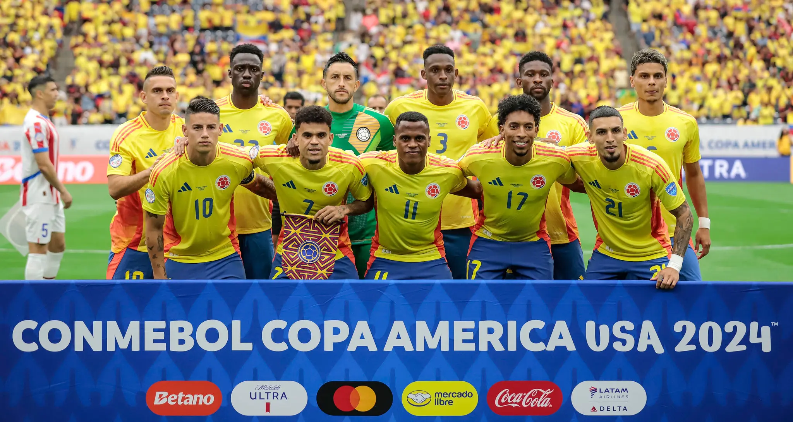

⚽🔥 Misión Mundial 2026: Colombia no puede fallar 🇨🇴
Colombia llega al Mundial 2026 con ilusión, presión y una generación que está obligada a responder.
📸 Foto: Federación Colombiana de Fútbol
La expectativa de todo un país
Tras el final de las eliminatorias rumbo al Mundial, todos nos preguntamos: ¿qué se espera de esta selección Colombia en el Mundial 2026? La respuesta no es sencilla. Después de alcanzar la final de la Copa América, el país tiene motivos para ilusionarse, pero también enfrenta la presión de demostrar que puede competir de tú a tú con selecciones de mayor calibre. Las expectativas son claras: no llegar al menos a cuartos de final, en un torneo que contará con 16avos de final, sería un resultado que el país difícilmente podría aceptar.
James Rodríguez, el eje del proyecto
El equipo gira alrededor de James Rodríguez, cuya posible despedida mundialista añade dramatismo y peso emocional. James no solo organiza el juego; inspira, conecta, y decide. A su lado, Luis Díaz, Richard Ríos, Daniel Muñoz y Jhon Duran, que pueden aportan velocidad, fuerza, pase y gol. La combinación de talento joven y experiencia internacional crea un equipo capaz de enfrentar a selecciones de primer nivel, siempre que la cohesión colectiva se mantenga intacta.
La idea táctica de Néstor Lorenzo
Presión alta y transiciones rápidas
Bajo la dirección de Néstor Lorenzo, Colombia plantea estrategias claras: presión alta para recuperar rápido, transiciones veloces aprovechando la rapidez de Díaz y Muñoz, y un mediocampo creativo donde James distribuye cada balón. La flexibilidad táctica —alternando entre 4-3-3 ofensivo y 4-2-3-1 más defensivo— permite adaptarse al rival sin perder identidad. Lorenzo sabe que el equilibrio entre disciplina y creatividad será la clave para que la Tricolor cumpla las expectativas.

📸 Fuente: FIFA
Presión, madurez y una oportunidad histórica
Frente a mundiales anteriores, Colombia llega con más madurez, mejor balance y un grupo consciente de su potencial. Pero la presión será enorme. La afición exige grandes actuaciones y la prensa no perdona errores. Sin embargo, esta tensión también puede ser combustible. Con James marcando el ritmo, un plantel ofensivo potente y estrategias bien definidas por Lorenzo, Colombia tiene la oportunidad de trascender.
El Mundial 2026 será mucho más que un torneo: será el test final de una generación y la posible despedida de su estrella. Llegar a cuartos de final y aspirar más no es solo un objetivo: es un mandato histórico. La Tricolor tiene el talento, la táctica y el corazón; ahora le toca demostrar que está a la altura de los sueños de todo un país.